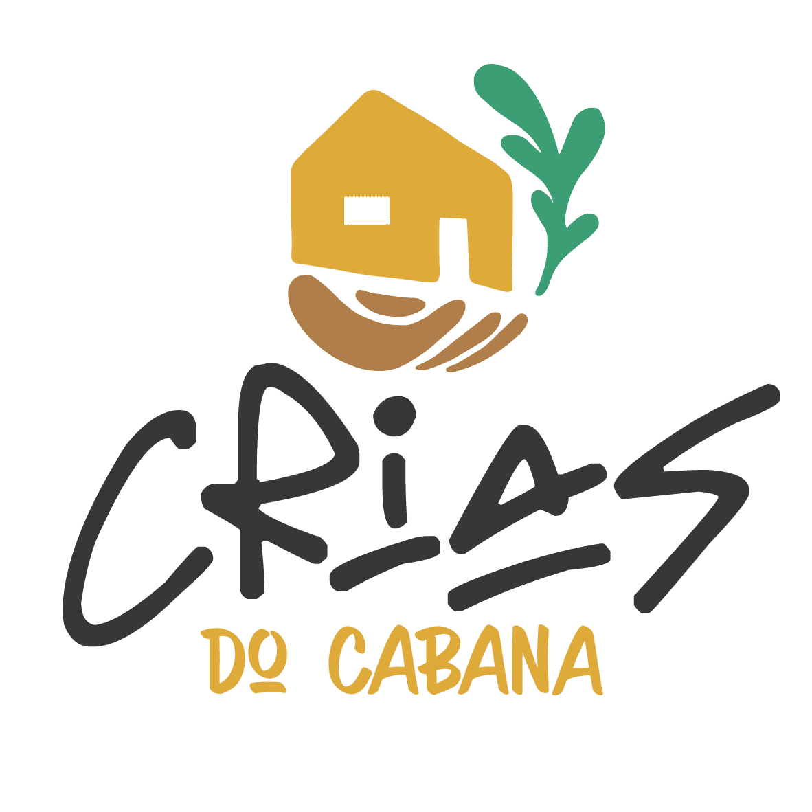

O MUSEU
O Museu Crias do Cabana é um museu virtual, aberto e colaborativo, cujo intuito é construir exposições interativas das histórias e memórias de moradoras e moradores do Aglomerado Cabana do Pai Tomás, em Belo Horizonte, Minas Gerais. A proposta é uma iniciativa do projeto “Artes de Curar, Rezar e Brincar: saberes, tradições e suas resistências ao apagamento no Aglomerado Cabana do Pai Tomás”, que surgiu em 2020, como parte do Programa SoFiA de Extensão Popular e Divulgação Científica, do Centro Federal de Educação Tecnológica de Minas Gerais (CEFET-MG).
O desenvolvimento tecnológico do Museu virtual foi viabilizado a partir da parceria com o COMPET, Grupo do Programa de Educação Tutorial (PET), vinculado ao curso Engenharia de Computação do CEFET-MG e também do Grupo PET ConecTTE CEFET-MG: conexão interdisciplinar entre trabalho, tecnologias e educação.
A iniciativa reverbera a função social do CEFET-MG, ampliando o conceito de tecnologia e seus usos sociais, considerando o papel da instituição na democratização do conhecimento e no registro e na preservação de saberes ancestrais, tradicionais e populares.